设计周刊 Design Weekly #46
📕 设计资源
Penpot: Design Freedom for Teams
Penpot是第一个开放源码的设计和原型平台，旨在为跨领域的团队服务。不依赖于操作系统，Penpot是基于网络的，并且使用开放的网络标准（SVG）。
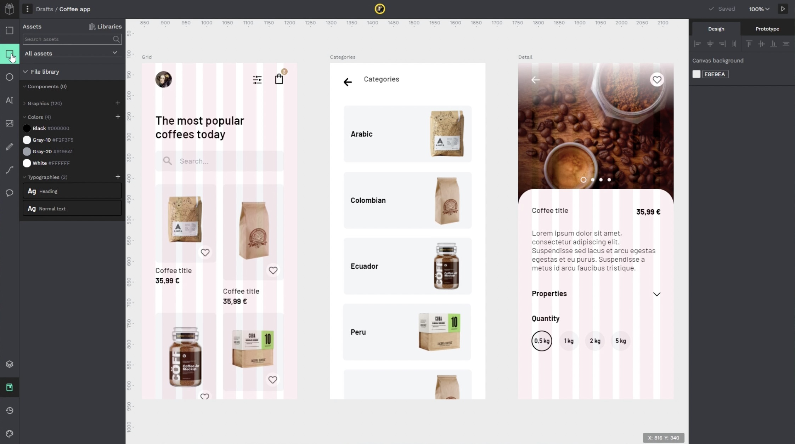
jitter
一款基于浏览器的在线动效设计工具，轻松将您的作品导出为视频或 Gif。
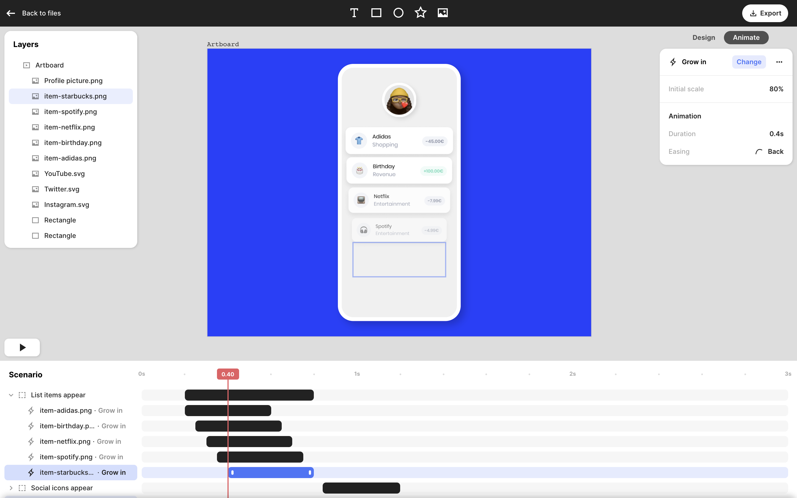
Tabbied
由 pattern geeks 开发的使用生成图案进行涂鸦的工具。
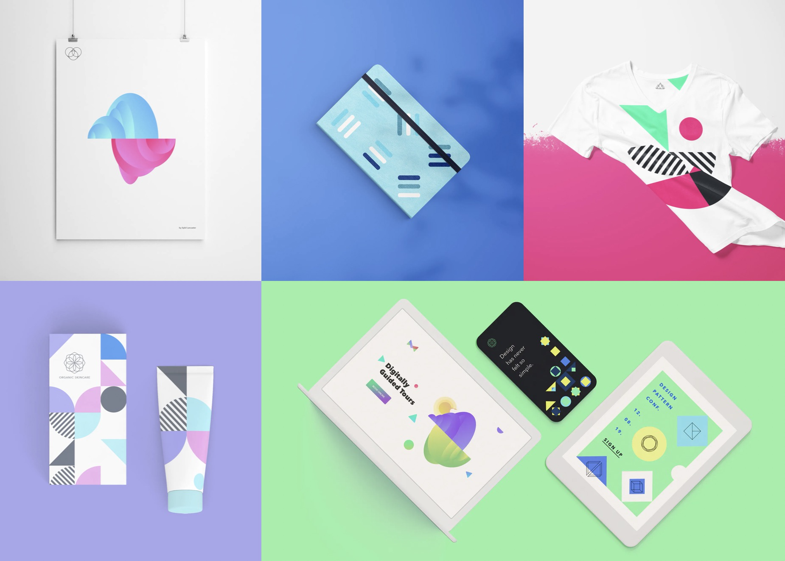
📗 设计文章
UI & UX Micro-Tips:Volume One.
https://marcandrew.me/ui-ux-micro-tips-volume-one/
设计师 mrcndrw 制作的 UI/UX 小技巧集合，通过最小化的设计调整给用户和产品带来更好的体验。
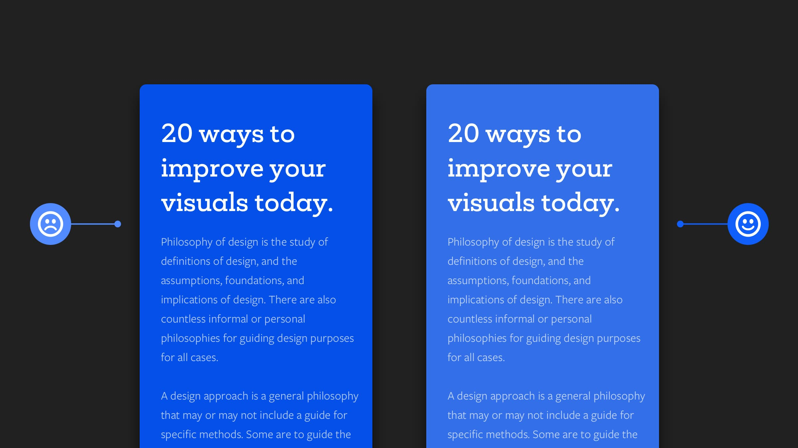
The State of User Research 2021 Report
https://www.userinterviews.com/blog/state-of-user-research-2021-report
2021年用户研究数据可视化报告，第三份年度用户研究状况报告从用户体验研究方法、工具、薪水和远程工作等维度分析了该行业的发展趋势。
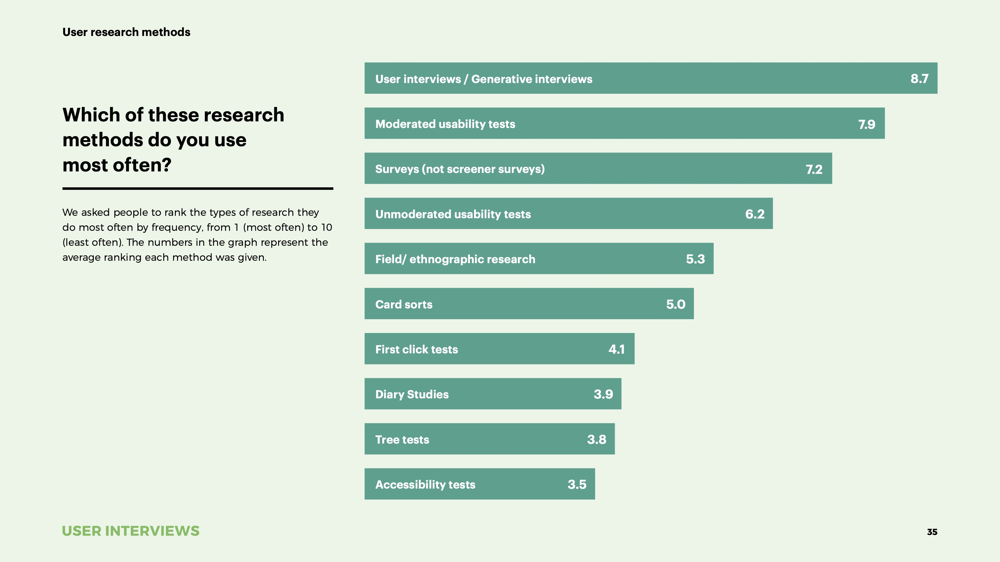
📘 设计案例
如何量化用户体验？
https://www.nngroup.com/articles/quantifying-case-study
尼尔森·诺曼（NN/g）以研究为导向的方式对 Baileigh Industrial（位于威斯康星州的以顶级工业金属和木工制造商）的销售站点进行了信息架构的优化，最终商品的发现性提高了 85%。
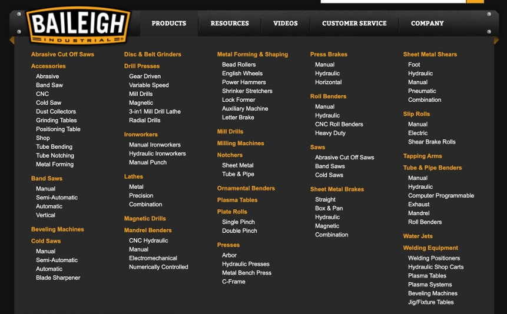
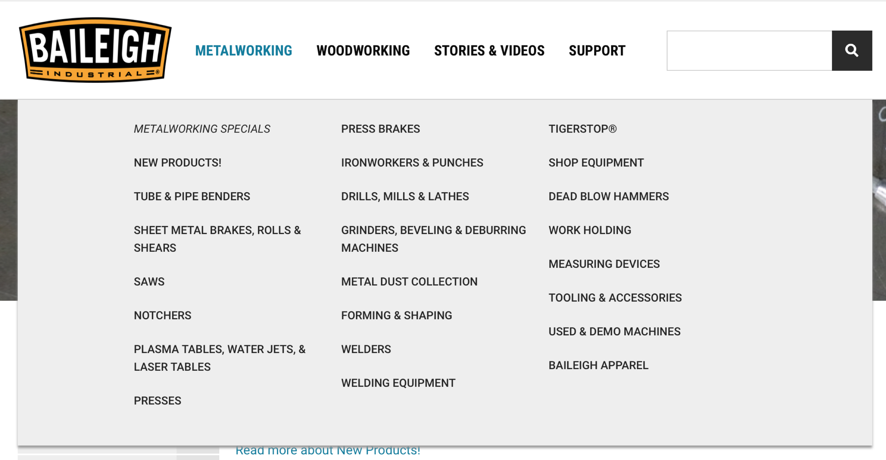
最爱打扮自己的可乐届红人
https://www.shejipi.com/529412.html
相信很多人对于可口可乐并不陌生，作为一家被饮料事业耽误的设计公司，可口可乐总能围绕着红色罐体，创作出一系列或走心、或创新的包装设计。
最近，可口可乐又推出了一项全新的「Open To Better」（敞开心扉）系列活动。
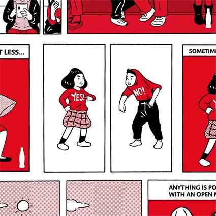
📙 设计灵感
Andy.Works
https://www.andy.works/product/weather
Andy.Works 致力于创造有趣的应用程序和皮肤，所创造的应种没有广告、没有数据追踪，简单专注的创造有趣的产品。
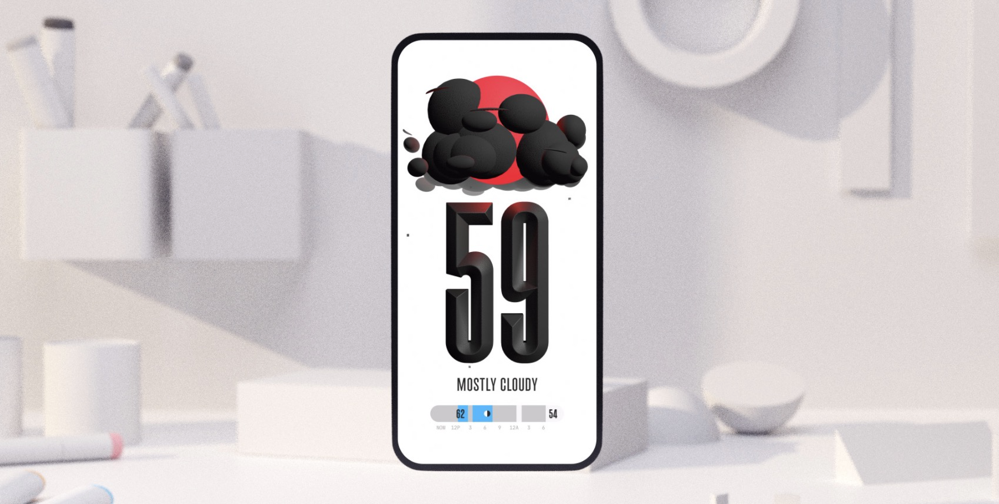
Pandemic Graphic Archive (WIP)
https://twometregraphics.co.uk/
Pandemic Graphic Archive 是设计师 Chrlotte Walker 发起的一个分享疫情中各种日常视觉语言的项目。一起看看各个国家的那些标识等视觉语言都是什么样子的，也可以将咱们的发现投稿给 Ello@challot.co.uk
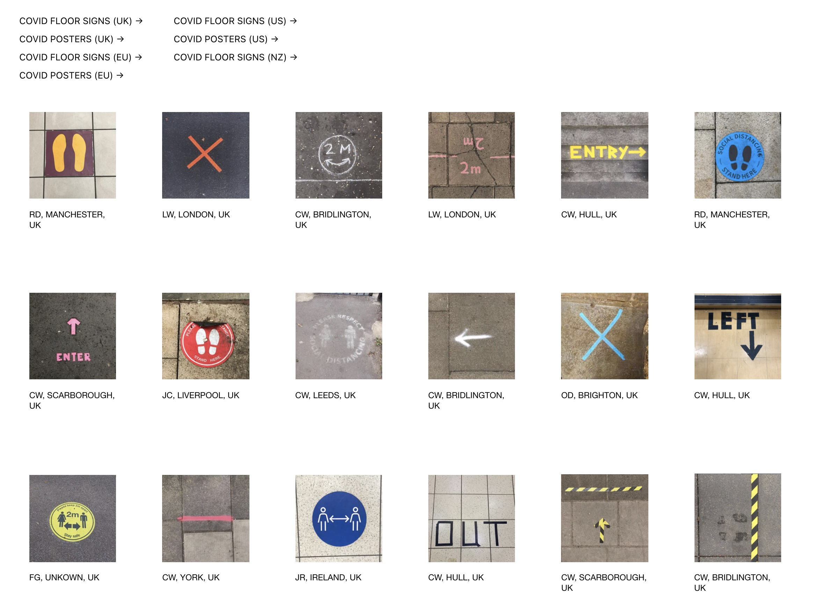
大数据揭秘2021年的10个创意趋势
https://www.topys.cn/article/31418
2021年的创意行业会出现哪些新趋势？Shutterstock发布的《2021创意趋势报告》或许能带给我们新的灵感与启发。报告中的10个创意趋势大致分为五类：平面设计、摄影、影片镜头、音乐和趋势观察。
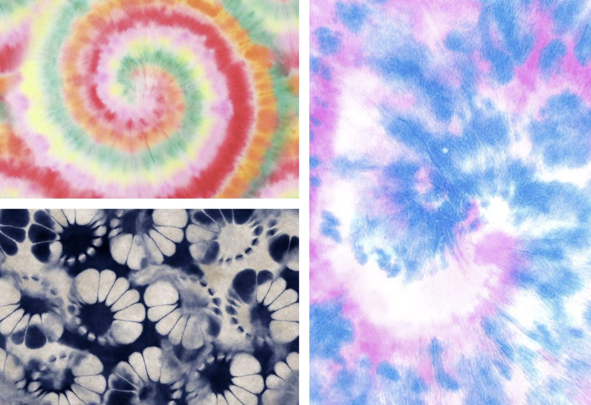